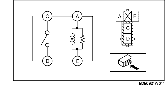
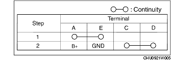
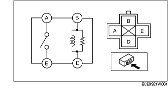
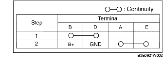

RELAY INSPECTION
B3E092167730W02
Relay type
Terminal type
Part name
4 terminals
Type A
• Front fog light relay
• Running light relay
• A/C relay
• Rear window defroster relay
• Fuel pump relay
• Horn relay
Type B
• Main relay
• Starter relay
• Blower relay
• Headlight cleaner relay
Type A
1. Verify the continuity between the relay terminals.

• If not as indicated in the table, replace the relay.

Type B
1. Verify the continuity between the relay terminals.

• If not as indicated in the table, replace the relay.
